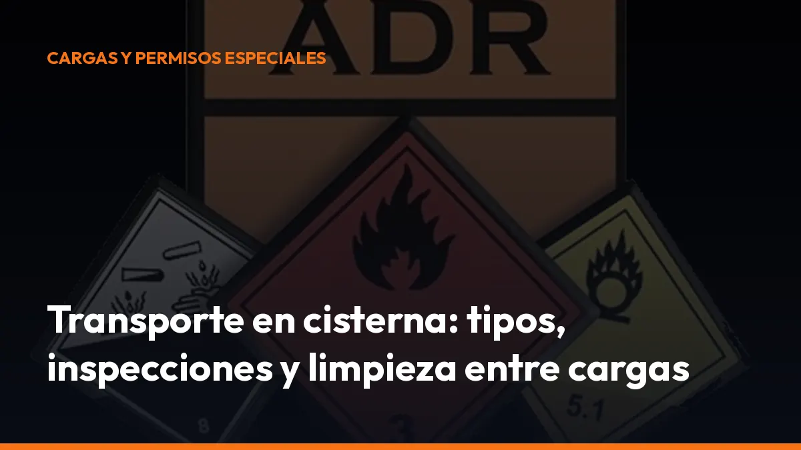

Transporte en cisterna: tipos, inspecciones y limpieza entre cargas

Si transportas líquidos, gases, productos pulverulentos o mercancías peligrosas, cualquier error en la carga, la limpieza o la señalización puede provocar retrasos, rechazo en planta, problemas durante una inspección o sanciones.
En esta guía encontrarás los puntos esenciales sobre el camión cisterna, las cisternas desmontables y los contenedores-cisterna.
Importante: este artículo es informativo. La clasificación concreta de cada producto y sus requisitos deben comprobarse en el ADR vigente, la ficha de la mercancía y la normativa española aplicable.
¿Qué tipos de cisterna existen?
La normativa distingue varias unidades. Cada una tiene una forma de uso y unos requisitos de fijación diferentes.
Cisterna fija
La cisterna fija está unida permanentemente al vehículo. El conjunto forma un vehículo cisterna.
Se utiliza habitualmente para transportar:
- Combustibles y líquidos inflamables.
- Productos químicos.
- Ácidos y sustancias corrosivas.
- Gases licuados o comprimidos, cuando la cisterna está diseñada para ello.
- Productos alimentarios líquidos, como leche, aceites o zumos, con los requisitos sanitarios correspondientes.
El depósito, los equipos de servicio, las válvulas y los elementos de fijación deben estar diseñados como un conjunto. No puedes valorar únicamente el estado exterior del tanque: también debes revisar el vehículo portador y sus sistemas de seguridad.
Cisterna desmontable
La cisterna desmontable se fija al chasis mediante elementos de sujeción que permiten retirarla. Normalmente se manipula cuando está vacía.
Es útil cuando necesitas cambiar de unidad portadora o combinar diferentes operaciones de transporte. Sin embargo, debes comprobar siempre:
- La correcta fijación al vehículo.
- La compatibilidad entre cisterna y producto.
- El estado de las conexiones.
- La validez de las inspecciones.
- La documentación de la cisterna y del vehículo.
Una cisterna desmontable no elimina las obligaciones del transporte ADR. Una vez instalada sobre el vehículo, el conjunto debe cumplir las condiciones exigibles para circular.
Contenedor-cisterna
El contenedor-cisterna integra un depósito y sus equipos dentro de una estructura que permite manipularlo y cambiarlo de modo de transporte.
Puede viajar por carretera, ferrocarril o vía marítima, siempre que cumpla los requisitos del modo utilizado. Se emplea para:
- Líquidos químicos.
- Gases.
- Productos alimentarios.
- Materias pulverulentas o granulares.
- Mercancías peligrosas autorizadas por el ADR, RID o IMDG, según el trayecto.
Su principal ventaja es la intermodalidad. Su principal exigencia es mantener coordinadas las inspecciones y certificaciones aplicables a cada transporte.
Construcción y requisitos técnicos: la seguridad empieza en el
depósito
La Orden de 20 de septiembre de 1985 regula las normas de construcción, aprobación de tipo, ensayos e inspección de cisternas para mercancías peligrosas. El Real Decreto 97/2014 la mantiene como referencia complementaria al ADR.
Antes de poner una cisterna en servicio debes verificar, entre otros aspectos:
- Aprobación de tipo: la unidad debe corresponder a un tipo aprobado y adecuado para las materias autorizadas.
- Materiales compatibles: el depósito, los revestimientos, las juntas y las tuberías no pueden reaccionar peligrosamente con la carga.
- Resistencia estructural: la cisterna debe soportar las solicitaciones estáticas y dinámicas normales del transporte.
- Soldaduras controladas: las uniones deben fabricarse y revisarse conforme al proyecto y al código de diseño aplicable.
- Equipos de servicio: válvulas, cierres, bocas de hombre, dispositivos de seguridad, indicadores y conexiones deben funcionar correctamente.
- Protección contra impactos: las partes más expuestas deben estar protegidas frente a golpes, vuelcos o arranques de equipos.
- Estabilidad: el diseño debe limitar los riesgos derivados del centro de gravedad y del desplazamiento de la carga.
No cargues una cisterna solo porque “parece estar bien”. La inspección visual es necesaria, pero no sustituye a las pruebas reglamentarias ni a la comprobación documental.
El movimiento del líquido también afecta a la conducción
Una cisterna parcialmente llena puede ser más difícil de controlar que una completamente llena o prácticamente vacía. El líquido se desplaza durante las frenadas, las curvas y los cambios de velocidad.
Ese movimiento puede provocar:
- Desplazamientos laterales.
- Aumento de la distancia de frenado.
- Pérdida de estabilidad.
- Mayor esfuerzo sobre los anclajes.
- Golpes internos contra las paredes del depósito.
Por eso existen compartimentos, mamparos y rompeolas. Estos elementos reducen el movimiento de la carga y ayudan a mantener una conducción más estable.
Como conductor, adapta siempre la velocidad y la distancia de seguridad. Evita frenadas bruscas y cambios violentos de dirección. La estabilidad de la unidad depende tanto del diseño de la cisterna como de tu forma de conducir.
Inspecciones iniciales, periódicas y extraordinarias
El artículo 10 del RD 97/2014 establece las inspecciones de las cisternas, vehículos batería, CGEM y MEMU. Además, el artículo 16 regula el certificado de aprobación de los vehículos que lo necesitan.
Inspección inicial
Se realiza antes de la puesta en servicio. Incluye normalmente:
- Verificación de conformidad con el tipo aprobado.
- Comprobación de las características de construcción.
- Examen interior y exterior.
- Ensayo de presión hidráulica.
- Prueba de estanqueidad.
- Verificación de válvulas y equipos.
- Comprobación de los medios de fijación.
- Prueba volumétrica cuando corresponda.
Si el resultado es favorable, el organismo de control genera las actas y certificados necesarios para solicitar el certificado de aprobación.
Inspección intermedia
Para vehículos cisterna y cisternas desmontables, la referencia general es cada 3 años. Para contenedores-cisterna, el intervalo general es cada 2 años y medio, salvo requisitos particulares de la materia o del tipo de unidad.
Se revisan el estado interior y exterior, la estanqueidad y el funcionamiento de los equipos.
Inspección periódica completa
Como regla general, las cisternas fijas, desmontables y baterías de recipientes se someten a una prueba más completa cada 6 años. En los contenedores-cisterna, el plazo general es cada 5 años.
Además de las comprobaciones anteriores, suele incluir una prueba hidráulica y una inspección interior completa.
Inspección extraordinaria
Debes solicitarla después de:
- Un accidente.
- Una reparación que afecte al depósito.
- Una modificación de la cisterna.
- Un golpe que pueda haber dañado los equipos.
- Cualquier circunstancia que genere dudas sobre la seguridad de la unidad.
No vuelvas a cargar ni a circular con normalidad hasta confirmar que la cisterna mantiene sus condiciones reglamentarias.
Limpieza, desgasificación y certificado de lavado
La limpieza entre cargas es una de las fases más importantes del transporte de cisternas. El producto anterior puede contaminar la nueva carga, reaccionar con ella o generar vapores peligrosos.
El artículo 42 del RD 97/2014 establece que el transportista debe informar al cargador sobre la última mercancía cargada. Antes de cargar, el cargador debe exigir el certificado de lavado interior o, cuando proceda, el certificado de desgasificación y despresurización.
El certificado debe acreditar que la cisterna está:
- Vacía.
- Limpia.
- En condiciones adecuadas para la nueva carga.
- Tratada por una empresa que cumple la normativa aplicable a las instalaciones de lavado.
No siempre es obligatorio presentar un nuevo certificado. Existe una excepción cuando la cisterna llega vacía de descargar una mercancía y va a cargar la misma u otra mercancía compatible. Aun así, debes comprobar siempre el procedimiento exigido por la planta cargadora.
El lavado no es solo una cuestión de higiene. También sirve para evitar:
- Contaminación cruzada.
- Reacciones químicas.
- Atmósferas tóxicas o inflamables.
- Daños en válvulas y juntas.
- Rechazos en la planta de carga.
Tras la descarga, si no se ha podido realizar la limpieza, el vehículo debe continuar documentado como si transportara la última mercancía cargada. No improvises: solicita el certificado y guarda una copia.
Señalización del camión cisterna
La señalización debe corresponder a la mercancía transportada y al tipo de unidad.
Según el caso, el vehículo puede necesitar:
- Paneles naranja.
- Números de identificación de peligro y de ONU.
- Placas-etiqueta de peligro.
- Marcas específicas para determinadas materias.
- Señalización de compartimentos individuales.
- Elementos reflectantes y señalización reglamentaria del vehículo.
El cargador debe colocar o comprobar la señalización exigible. Antes de salir, revisa que no queden paneles, etiquetas o números de una carga anterior.
La señalización incorrecta puede provocar una inmovilización inmediata durante un control. Comprueba los datos antes de cerrar las bocas y comenzar la ruta.
Documentación que debe acompañar al porte
Prepara una carpeta física y otra digital. Como mínimo, revisa estos documentos cuando sean aplicables:
- Carta de porte: debe identificar correctamente la mercancía, su cantidad y las condiciones del transporte.
- Instrucciones escritas ADR: deben estar a bordo y en un idioma que comprenda la tripulación.
- Certificado de aprobación: necesario para los vehículos y unidades que lo exijan.
- Certificado ADR del conductor: cuando la materia y el tipo de transporte lo requieran.
- Certificado de lavado, desgasificación y despresurización: cuando proceda.
- Actas de inspección de la cisterna: iniciales, periódicas o extraordinarias.
- Certificados de estanqueidad y presión hidráulica: cuando correspondan.
- Ficha técnica y documentación del vehículo.
- Documentación del producto y del expedidor.
- Pólizas, autorizaciones o documentos adicionales exigidos por el contrato o la mercancía.
El RD 97/2014 obliga al transportista a conservar la documentación de transporte durante el plazo establecido. Digitaliza cada documento y tenlo disponible desde el móvil para responder rápidamente ante una inspección.
Control final antes de salir
Utiliza esta lista rápida:
1. Producto correcto: confirma la mercancía y su número ONU. 2. Cisterna adecuada: comprueba el código y la compatibilidad. 3. Carga segura: verifica el grado de llenado y la masa autorizada. 4. Limpieza acreditada: revisa el certificado de lavado o la excepción aplicable. 5. Equipos cerrados: comprueba válvulas, bocas, tapas y mangueras. 6. Señalización correcta: retira cualquier identificación anterior. 7. Documentos a bordo: carta de porte, instrucciones y certificados. 8. Vehículo preparado: extintores, equipos de protección y conexiones en buen estado.
Gestiona la documentación del transporte sin perder tiempo
Una inspección no debería convertirse en una búsqueda de papeles dentro de la cabina. Con Mi Carga puedes generar y gestionar documentación digital para tus portes directamente desde el móvil.
Activa tu cuenta, introduce los datos del transporte y mantén la información disponible durante la ruta. La suscripción de Mi Carga incluye portes ilimitados, modo sin conexión y trazabilidad ROTT.
Empieza con 10 portes de prueba, sin caducidad. Después puedes elegir:
10 € al mes + IVA
o
90 € al año + IVA
Sin permanencia y con cancelación desde tu cuenta.
Digitaliza tus cartas de porte, reduce errores y llega a cada control con la documentación preparada. Empieza hoy desde Mi Carga y solicita tu alta directamente.
Genera tus 10 primeros documentos gratis con Mi Carga
DeCA, carta de porte y ADR, en PDF, con QR y archivo automático en la nube.
Empezar con 10 documentos gratisArtículo informativo. Consulta siempre el caso concreto de tu operación. ¿Dudas? Escríbenos.